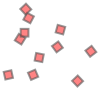
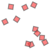

from typing import Union, Tuple, Listfrom PIL import Image, ImageDrawimport mathimport randomfrom sympy import flattenfrom numpy.linalg import normimport numpy as npfrom typing import List, Tupleimport mathfrom math import cos, sin, tan, pifrom shapely.geometry import MultiPolygon, Polygon, Pointfrom shapely.affinity import rotatefrom shapely.ops import unary_unionimport gymnasium as gymimport tensorflow as tffrom tensorflow import kerasfrom tensorflow.keras import layers
2024-04-30 19:29:07.139573: I tensorflow/core/util/port.cc:113] oneDNN custom operations are on. You may see slightly different numerical results due to floating-point round-off errors from different computation orders. To turn them off, set the environment variable `TF_ENABLE_ONEDNN_OPTS=0`.
2024-04-30 19:29:07.139892: I external/local_tsl/tsl/cuda/cudart_stub.cc:32] Could not find cuda drivers on your machine, GPU will not be used.
2024-04-30 19:29:07.144709: I external/local_tsl/tsl/cuda/cudart_stub.cc:32] Could not find cuda drivers on your machine, GPU will not be used.
2024-04-30 19:29:07.200270: I tensorflow/core/platform/cpu_feature_guard.cc:210] This TensorFlow binary is optimized to use available CPU instructions in performance-critical operations.
To enable the following instructions: AVX2 AVX_VNNI FMA, in other operations, rebuild TensorFlow with the appropriate compiler flags.
2024-04-30 19:29:08.563706: W tensorflow/compiler/tf2tensorrt/utils/py_utils.cc:38] TF-TRT Warning: Could not find TensorRT
# Finds the straight-line distance between two pointsdef dist(ax, ay, bx, by):# return norm(np.array((ax, ay))-np.array((bx, by)))return math.sqrt((by - ay)**2+ (bx - ax)**2)# Rotates point `A` about point `B` by `angle` radians clockwise.def rotated_about(ax, ay, bx, by, angle): radius = dist(ax,ay,bx,by) angle += math.atan2(ay-by, ax-bx)return (round(bx + radius * math.cos(angle)),round(by + radius * math.sin(angle)) )
# Credit for this function goes to ChatGPT'''def overlap_area(squares: List[Tuple[float, float, float]]) -> float: # Create a dictionary to keep track of the number of squares overlapping each point overlap_counts = {} for rotated_corners in compute_corners(squares): # Add 1 to the overlap count for each point that this square covers for i in range(len(rotated_corners)): p1, p2 = rotated_corners[i], rotated_corners[(i+1)%len(rotated_corners)] for x in range(math.ceil(min(p1[0], p2[0])), math.floor(max(p1[0], p2[0]))): for y in range(math.ceil(min(p1[1], p2[1])), math.floor(max(p1[1], p2[1]))): if (x, y) in overlap_counts: overlap_counts[(x, y)] += 1 else: overlap_counts[(x, y)] = 1 # Compute the total area of overlap by summing the area of each overlapping square overlap_area = 0 for count in overlap_counts.values(): if count > 1: overlap_area += 1 return overlap_area ''''''def compute_intersection(p1, q1, p2, q2): x1, y1 = p1 x2, y2 = q1 x3, y3 = p2 x4, y4 = q2 denom = (y4-y3)*(x2-x1) - (x4-x3)*(y2-y1) if denom == 0: return None ua = ((x4-x3)*(y1-y3) - (y4-y3)*(x1-x3)) / denom ub = ((x2-x1)*(y1-y3) - (y2-y1)*(x1-x3)) / denom if 0 <= ua <= 1 and 0 <= ub <= 1: return (x1 + ua*(x2-x1), y1 + ua*(y2-y1)) else: return Nonedef overlap_area(squares: List[Tuple[float, float, float]]) -> float: # Create a set to keep track of all the overlapping points overlap_points = set() # Iterate over all pairs of squares for i in range(len(squares)): for j in range(i+1, len(squares)): # Compute the corners of each square corners_i = compute_corners([squares[i]])[0] corners_j = compute_corners([squares[j]])[0] # Iterate over all pairs of edges for k in range(len(corners_i)): for l in range(len(corners_j)): # Compute the intersection point of the edges p = compute_intersection(corners_i[k], corners_i[(k+1)%len(corners_i)], corners_j[l], corners_j[(l+1)%len(corners_j)]) if p is not None: overlap_points.add(p) # Compute the total area of overlap as the sum of the areas of the triangles formed by each set of three adjacent points overlap_area = 0 overlap_points = sorted(list(overlap_points)) for i in range(1, len(overlap_points)-1): a, b, c = overlap_points[i-1], overlap_points[i], overlap_points[i+1] overlap_area += abs((b[0]-a[0])*(c[1]-a[1]) - (c[0]-a[0])*(b[1]-a[1]))/2 return overlap_area '''from shapely.geometry import Polygon, MultiPolygon'''def get_overlapping_polygons(squares: List[Tuple[float, float, float]]) -> List[Polygon]: polygons = [] for square in squares: x, y, rad = square # calculate the coordinates of the four corners of the square p1 = (x + 0.5 * cos(rad - pi / 4), y + 0.5 * sin(rad - pi / 4)) p2 = (x + 0.5 * cos(rad + pi / 4), y + 0.5 * sin(rad + pi / 4)) p3 = (x + 0.5 * cos(rad + 3 * pi / 4), y + 0.5 * sin(rad + 3 * pi / 4)) p4 = (x + 0.5 * cos(rad - 3 * pi / 4), y + 0.5 * sin(rad - 3 * pi / 4)) # create a polygon from the four corners polygon = Polygon([p1, p2, p3, p4]) # check if this polygon overlaps with any of the previously created polygons overlaps = False for p in polygons: if polygon.intersects(p): overlaps = True # merge the overlapping polygons polygon = polygon.union(p) polygons.remove(p) if not overlaps: # add the polygon to the list polygons.append(polygon) return polygons '''def convert2shapely(squares:List[Tuple[float, float, float]], side_len:float=1.0) -> List[Polygon]:return [Polygon(corners) for corners in compute_corners(squares, sideLen=side_len)]def get_overlapping_polygons(squares: List[Tuple[float, float, float]], side_len: float=1.0) -> List[Polygon]: overlap = [] squares = convert2shapely(squares)for p1 in squares:for p2 in squares:if p1 == p2:continueif p1.intersects(p2):print('Intersection detected') overlap.append(p1.union(p2))return overlap# for x, y, rad in squares:# # compute the corners of the square based on its center and orientation# corners = compute_corners([square], side_len)[0]# # create a polygon from the corners# polygon = Polygon(corners)# # check if this polygon overlaps with any of the previously created polygons# overlaps = False# for p in polygons:# if polygon.intersects(p):# overlaps = True# # merge the overlapping polygons# polygon = polygon.union(p)def drawBox(draw, x, y, rot, sideLen): square_vertices = ( (x + sideLen /2, y + sideLen /2), (x + sideLen /2, y - sideLen /2), (x - sideLen /2, y - sideLen /2), (x - sideLen /2, y + sideLen /2) ) square_vertices = [rotated_about(_x, _y, x, y, rot) for _x, _y in square_vertices] draw.polygon(square_vertices, fill='#FF7B00')def graphBoxes(squares:List[Tuple['x','y','rad']], squareSize=20, verbose=False):print(f'Size is: {get_bounding_box(compute_corners(squares, squareSize), square=True):.3f}')print(f'Overlapping area is: {overlap_area(squares)}')print(f'Wasted Space is: ')# Create image image = Image.new("RGB", (200, 200), "white") draw = ImageDraw.Draw(image)# Do some calculations corners = compute_corners(squares, squareSize) cornersX, cornersY = np.array(corners).T bottomRight = cornersX.max(), cornersY.max() topLeft = cornersX.min(), cornersY.min()# Draw all the boxesfor x, y, rad in squares: drawBox(draw, x, y, rad, squareSize)if verbose:# Draw the cornersfor x, y in flatten(corners, levels=1): draw.ellipse((x-2, y-2, x+2, y+2), fill='#3DAEE9')# Draw the bounding box cornersfor x, y in (topLeft, bottomRight): draw.ellipse((x-2, y-2, x+2, y+2), fill='#F4C02C')# Draw bounding box w, h = get_bounding_box(corners, square=False) draw.rectangle((topLeft, (topLeft[0]+w, topLeft[1]+h)), outline='#383838')# Draw bounding square w = get_bounding_box(corners, square=True) draw.rectangle((topLeft, (topLeft[0]+w, topLeft[1]+w)), outline='#8399A4')# Draw the overlapping areasfor polygon in get_overlapping_polygons(squares, side_len=squareSize): vertices = polygon.exterior.coords# draw the polygon using the polygon method draw.polygon(vertices, fill=(255, 0, 0, 128), outline=(255, 0, 0, 255))return imagesqs = convert2shapely([(random.uniform(50, 150), random.uniform(50, 150), random.uniform(1, 2*math.pi)) for i inrange(5)])graphBoxes(sqs, verbose=True)# polygons.remove(p)# if not overlaps:# # add the polygon to the list# polygons.append(polygon)# return polygons
def lossFunc(squares:MultiPolygon): score =0ifnot squares.is_valid:# We don't like it when they overlap at all score -=1000# We don't like it when they overlap a lot score -= math.e**overlap_area(squares) score -= wasted_space(squares) score -= side_len(squares)return score
# This is useful. I don't know *how*, but it's got to be somehow# squares.convex_hullsquares = MultiPolygon(convert2shapely([(random.uniform(0, space), random.uniform(0, space), random.uniform(1, 2*math.pi)) for i inrange(N)], side_len=scale))if verbose: display(unary_union((squares, squares.minimum_rotated_rectangle.exterior)))else: display(squares)print(f'Overlaps: {not squares.is_valid}')print(f'Overlap Area: {overlap_area(squares):.3f}')print(f'Side Length: {side_len(squares):.3f}')print(f'Wasted Space: {wasted_space(squares):.2f}')print(f'Loss: {lossFunc(squares)}')
NameError: name 'compute_corners' is not defined
squares = MultiPolygon(convert2shapely([(random.uniform(0, space), random.uniform(0, space), random.uniform(1, 2*math.pi)) for i inrange(N)], side_len=scale))squares

squares

Testing gym
# !pip install gymnasiumfrom typing import Union, Tuple, Listfrom PIL import Image, ImageDrawimport mathimport randomfrom sympy import flattenfrom numpy.linalg import normimport numpy as npfrom typing import List, Tupleimport mathfrom math import cos, sin, tan, pifrom shapely.geometry import MultiPolygon, Polygon, Pointfrom shapely.affinity import rotatefrom shapely.ops import unary_unionimport gymnasium as gym# import tensorflow as tf# from tensorflow import keras# from tensorflow.keras import layers%load_ext autoreload%autoreload 2!pip install -e SquarePacking
Defaulting to user installation because normal site-packages is not writeable
ERROR: SquarePacking is not a valid editable requirement. It should either be a path to a local project or a VCS URL (beginning with bzr+http, bzr+https, bzr+ssh, bzr+sftp, bzr+ftp, bzr+lp, bzr+file, git+http, git+https, git+ssh, git+git, git+file, hg+file, hg+http, hg+https, hg+ssh, hg+static-http, svn+ssh, svn+http, svn+https, svn+svn, svn+file).